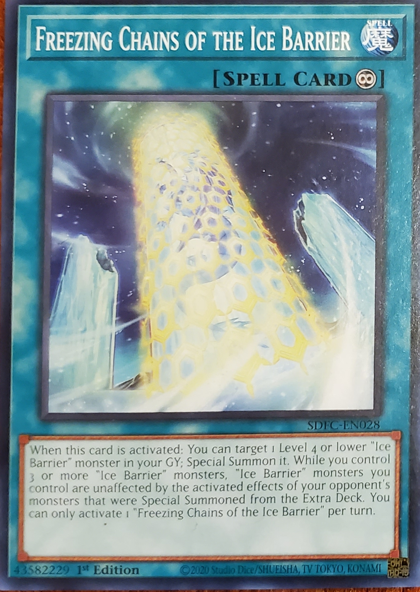

Freezing Chains of the Ice Barrier
Continuous Spell
When this card is activated: You can target 1 Level 4 or lower "Ice Barrier" monster in your GY; Special Summon it. While you control 3 or more "Ice Barrier" monsters, "Ice Barrier" monsters you control are unaffected by the activated effects of your opponent's monsters that were Special Summoned from the Extra Deck. You can only activate 1 "Freezing Chains of the Ice Barrier" per turn.